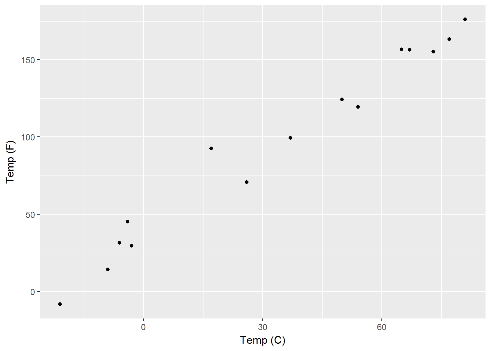

2 Linear Regression
2.1 Overview
Almst all supervised models relate one or more input variables, \(X_1,X_2, \ldots , X_p\), to an output variable, \(Y\). The general equation for a supervised model takes the form \[Y = f(X)\]. The simplest method with which to combine the inputs \(X\) is through a linear combination, namely addition. When dealing with a numerical output, we’ll deal with a different type of output in chapter NEED CHAPTER NAME, this problem is termed regression, hence the name linear regression. Before tackling the general form of the model let’s take a look at the example where there is only a single input variable, termed simple linear regression. Plotted in the figure below are 15 random temperature values read from an accurate celsius thermometer on the X axis and from a slightly less accurate farenheit thermometer on the Y axis.

There is an obvious a linear relationship between the values on the X and Y axes, i.e., as the temperature in Celsius increases the temperature in Farenheit increases a proportional amount, and if you remember the formula to convert between the two is \(F = \dfrac{9}{5}\cdot C + 32\). Converting this formulation into our nomenclature gives the formula for simple linear regression
\[\begin{equation} Y = a_0 + a_1 \cdot X_1 \tag{2.1} \end{equation}\]Where \(Y\) is the output variable, \(X\) is input variable and \(a_0\) and \(a_1\) are the coefficients. However, this equation is not actually correct, as the Farneheit value are not precisely equation to \(\dfrac{9}{5}\) times the Celsius vcalues plus 32. This is very easy to see if I overlay a line generated from the equation \(F = \dfrac{9}{5}\cdot C + 32\) on top of the previous plot.

The red bars from the points to the line represent the distance from the real values to the measured values, also know as the error. So I can rewrite Equation (2.1) in one of two ways to be accurate. The first is to include an error term, \(\epsilon\) by standard notation, whose values are the lengths of the individual red lines.
\[\begin{equation} Y = a_0 + a_1 \cdot X_1 + \epsilon \tag{2.2} \end{equation}\]\(\epsilon\) is a variable with the same number of values as \(X\) and \(Y\), as seen in the table below
| Celsius | Farenheit (actual) | Farenheit (recorded) | Error |
|---|---|---|---|
| -29 | -20.2 | -6.0 | 14.2 |
| -13 | 8.6 | 12.5 | 3.9 |
| -12 | 10.4 | 29.2 | 18.8 |
| 6 | 42.8 | 59.0 | 16.2 |
| 11 | 51.8 | 34.0 | -17.8 |
| 20 | 68.0 | 84.4 | 16.4 |
The other way or rewriting Equation (2.1) is by admitting that the output variable, as well as the coefficients are just estimates of their true values, which I can represent by giving them tiny hats.
\[\begin{equation} \hat{Y} = \hat{a}_0 + \hat{a}_1 \cdot X_1 \tag{2.3} \end{equation}\]When more input variables are added the simple part of the term is dropped and it is referred to as general regression and takes the form
\[\begin{equation} Y = a_0 + a_1\cdot X_1 + a_2\cdot X_2 + \ldots a_p\cdot X_p + \epsilon = a_0 + \sum\limits_{i=1}^p(a_i\cdot X_i) + \epsilon \tag{2.4} \end{equation}\]Just as in simple linear regression, the \(a\)’s in front of the input variables control the slope of the line, \(a_0\) controls the intercept of the line. Taken together the \(a\)’s are referred to as the coefficients. \(\epsilon\) is the error as measured by the distance from the points on the right hand side to the true values on the left hand side of the equation.
Going back to our original simple linear regression problem involving temperature measurments. Since we know that the relationship between the input and output variables is not strictly goverened by the equation \(F = \dfrac{9}{5}\cdot C + 32\), we need a method of determining the coefficients which actually govern the relationship between our given input and outputs.
2.2 Coefficient Calculation
2.2.1 Least Sqaures
The general idea of the least squares method is that you want to pick coefficents which minimize the differences between the given output and the output calculated from the right hand side of equation (2.1). What makes this process least squares is that you calculate the difference using the sum of the squared differences, termed the residual sum of sqaures (RSS). Formally the residual sum of squares for the general form of linear regression in equation (2.4) can be written as :
\[\begin{equation} RSS(a) = \sum\limits_{i=1}^N\left(Y_i - \left[a_0 + \sum\limits_{j=1}^p a_j\cdot X_{i,j} \right]\right) \tag{2.5} \end{equation}\]2.3 Variable parameters
The values of the input and output parameters in a linear regression model are as follows. - Input Values can be any of the following - numerical values, also referred to as quantitative values - Dummy va
the difference between So to be more precise, I can rewrite to include the fact that the output values, which in this case is the temperature in Farenheit, is actually an estimate of
I can rewrite the general formula for linear regression and this time include a term, \(\epsilon\) by standard notation, to represent the error.
which is almost get the general formula for simple linear regression. I am writing the relationship between the input and output variables as approxiamtely, because the readings were not completely accurate.
as applied to our data is not completely which is almost get the general formula for simple linear regression. I am writing the relationship between the input and output variables as approxiamtely, because the readings were not completely accurate.
Unlike our previous equation this time our equation (2.1) has an equals sign is the general formula for simple linear regression.
You can label chapter and section titles using {#label} after them, e.g., we can reference Chapter ??. If you do not manually label them, there will be automatic labels anyway, e.g., Chapter ??.
Figures and tables with captions will be placed in figure and table environments, respectively.
par(mar = c(4, 4, .1, .1))
plot(pressure, type = 'b', pch = 19)
Figure 2.1: Here is a nice figure!
Reference a figure by its code chunk label with the fig: prefix, e.g., see Figure 2.1. Similarly, you can reference tables generated from knitr::kable(), e.g., see Table 2.1.
knitr::kable(
head(iris, 20), caption = 'Here is a nice table!',
booktabs = TRUE
)| Sepal.Length | Sepal.Width | Petal.Length | Petal.Width | Species |
|---|---|---|---|---|
| 5.1 | 3.5 | 1.4 | 0.2 | setosa |
| 4.9 | 3.0 | 1.4 | 0.2 | setosa |
| 4.7 | 3.2 | 1.3 | 0.2 | setosa |
| 4.6 | 3.1 | 1.5 | 0.2 | setosa |
| 5.0 | 3.6 | 1.4 | 0.2 | setosa |
| 5.4 | 3.9 | 1.7 | 0.4 | setosa |
| 4.6 | 3.4 | 1.4 | 0.3 | setosa |
| 5.0 | 3.4 | 1.5 | 0.2 | setosa |
| 4.4 | 2.9 | 1.4 | 0.2 | setosa |
| 4.9 | 3.1 | 1.5 | 0.1 | setosa |
| 5.4 | 3.7 | 1.5 | 0.2 | setosa |
| 4.8 | 3.4 | 1.6 | 0.2 | setosa |
| 4.8 | 3.0 | 1.4 | 0.1 | setosa |
| 4.3 | 3.0 | 1.1 | 0.1 | setosa |
| 5.8 | 4.0 | 1.2 | 0.2 | setosa |
| 5.7 | 4.4 | 1.5 | 0.4 | setosa |
| 5.4 | 3.9 | 1.3 | 0.4 | setosa |
| 5.1 | 3.5 | 1.4 | 0.3 | setosa |
| 5.7 | 3.8 | 1.7 | 0.3 | setosa |
| 5.1 | 3.8 | 1.5 | 0.3 | setosa |
You can write citations, too. For example, we are using the bookdown package [@R-bookdown] in this sample book, which was built on top of R Markdown and knitr [@xie2015].